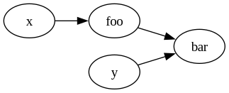

Understanding Mold Runtime
Table of Contents
Mold doesn't follow a traditional top-to-bottom execution model. Instead, the runtime evaluates only necessary formulae by following the dependency relations. Execution happens only on discrete steps called ticks.
1. Dependency Graph
Mold represents dependencies as a directed graph. Each edge on the graph represents a "providing" relation. Example:
in x : Int in y : Int def foo := x * x def bar := foo + y

Dependencies guide evaluation. When the host feeds a new value for
x, the graph suggests that foo must be evaluated. To illustrate,
if x = 2 initially, then foo = 4. If the host then feeds x = 3,
then foo must update to 9. This propagates further to bar, which
has to update from 4 + y to 9 + y.
However, each node can also decide on a cutoff. For example, if the
host were to feed x = -2 instead of x = 3 as in the last example,
then foo evaluates to 4 again. After this evaluation, foo no
longer propagates, and bar doesn't evaluate again, assuming y
remains the same.
Due to the way the propagation works, if there were a cycle such as,
def x := y + 1 def y := x + 1
then computation would not terminate. In general, since cycles can
diverge they are rejected with the exception of pre() (explained
later).
2. Ticks
When the host calls feed() and similar method on the Script
object, it only marks a change, but it doesn't commit to it, and it
doesn't evaluate. Ticks are the discrete steps, triggered by the
tick() method, where evaluation occurs and where changes are
committed.
The clearest mental model for ticks is to treat each formula as a sequence. The tick provides the maximum range of the indices. For example:
in y : Int def x := y * 2
has a sequence evolving at each tick as below
| Tick | Value fed to y | y | x |
|---|---|---|---|
| 0 | 5 | y = (5) | x = (10) |
| 1 | 3 | y = (5, 3) | x = (10, 6) |
| 2 | 6 | y = (5, 3, 6) | x = (10, 6, 12) |
| 3 | 11 | y = (5, 3, 6, 11) | x = (10, 6, 12, 22) |
In this model, each operation acts on sequences. For example, 2
defines a constant sequence of twos, and * multiplies corresponding
values of two sequences.
3. Shifting the sequences
The pre() function reads old values of a top-level variable, such as
inputs and formulae. By default, it reads the last value, but
optionally a depth can be specified as a second argument to read the
last Nth value. Since ticks progress in steps, this value doesn't
always exist on the initial few ticks. In these cases, pre evaluates
to null.
Since pre is a lookup to old values, it doesn't change in a given
tick. As such, it doesn't cause a propagation loop, and is omitted
from dependencies. As a result, cycles such as the one below are
allowed, and these cycles progress over ticks.
in a : Int in b : Int def x := pre(y) ? 0 + a def y := pre(x) ? 0 + b
It should be noted that, since pre don't count toward dependencies,
these cycles don't progress on their own, and require triggering
dependencies (such as a or b) to iterate, as with other formulae.
Using the sequence model defined in the Ticks section, pre may be
treated as a right-shift on the sequence of a variable. Values that
shift past the current tick bounds are dropped, whereas values that
remain empty after the shift are filled with null.
For instance, using the table from the previous example, pre(x) and
pre(x, 2) operate as below:
| x | pre(x) |
pre(x, 2) |
|---|---|---|
| x = (10) | x = (null) | x = (null) |
| x = (10, 6) | x = (null, 10) | x = (null, null) |
| x = (10, 6, 12) | x = (null, 10, 6) | x = (null, null, 10) |
| x = (10, 6, 12, 22) | x = (null, 10, 6, 12) | x = (null, null, 10, 6) |
4. Null arithmetic
Since operations act on entire sequences, null has well-defined
semantics in standard operations to allow for better interactions when
using pre.
Most operations directly propagate null,
2 + null = null null / 6 = null 5 >> null = null
For those coming from scripting languages, null interaction with
boolean operations may be unexpected. The standard value || default
pattern fails since boolean operations also directly propagate null:
true && null = null null || true = null # <- Most languages take this as true
The defaulting pattern for Mold is instead the coalescing operator, ?.
null ? 3 = 3
Equals (=) and not equals (/=) are also operators that consume
null, producing only a direct boolean.
x = x # true x = null # false null = null # true x /= x # false x /= null # true null /= null # false
Inequality similarly operates with null, producing just a boolean. In
inequalities, null is defined as the smallest value, meaning x > null,
x >= null and null <= x always hold. For x < null, it is
generally true, but since null < null is false (they are equal) it
doesn't generalise unlike the other cases.
For if/else expressions, null is treated the same as false,
if pre(x) /= null && pre(x) then 3 else 5 # same as: if pre(x) then 3 else 5 if true then 3 else 5 # 3 if false then 3 else 5 # 5 if null then 3 else 5 # 5
The null arithmetic allows for patterns such as:
def x := max(pre(x), y)
where, at tick zero, pre(x) is null and max(null, y) naturally
resolves to y since null is always smaller. Alternative patterns
have to use defaults such as a minimum integer constant or cleverly
default pre(x) to y, though such handling is error-prone.
5. Signals and events
An event in Mold is simply a value, and carries no special properties.
out sprinklers(level : Int) sprinklers(3) # Just a value of type `Event`
The dispatch mechanism of events lie in signals. A signal is a formula that registers its value for dispatch if it changed after evaluation. The dispatching may be thought of as a dependency that a signal provides. For example,
out alert(msg : String)
out log(msg : String, temp : Int)
# Temperature (℃)
in temp : Int
signal overheating :=
if temp > 70
then if temp - pre(temp) > 5
then alert("Overheating fast")
else alert("High temperature")
else log("Chill temperature", temp)
with a host
int main() { std::vector<std::int64_t> temps{65, 66, 65, 65, 71, 77, 78, 79}; auto script = /* ... */; script.on("alert", [](auto args) { std::println("[SEVERE] {}", args[0]); }); script.on("log", [](auto args) { std::println("[INFO] {} -- {}℃", args[0], args[1]); }); for (auto temp : temps) { script.feed("temp", {temp}); if (auto res = script.tick(); !res.has_value()) { std::println("{}", res.error()); assert(false && "Interpreter crash"); } } }
is expected to output
[INFO] Chill temperature -- 65℃ [INFO] Chill temperature -- 66℃ [INFO] Chill temperature -- 65℃ [SEVERE] Overheating fast [SEVERE] High temperature
It is important to emphasise that the dispatch only occurs on
change. From tick two to tick three, temp remains 65. Only the
first of these ticks emits the info. As opposed to this, from tick
zero to tick one, and from tick one to tick two, the temp
fluctuates, each of the three ticks thus emits an event.
In the sequence model, the signal may be modelled with a deduplicating
function. The formula of the signal produces a value each tick, but
deduplication filters through the sequence and keeps only the first of
any run of the same values, replacing others with null.
To illustrate, the original sequence of overheating and the
deduplicated version are given below:
| Tick | Original | Deduplicated |
|---|---|---|
| 0 | log("Chill temperature", 65) | log("Chill temperature", 65) |
| 1 | log("Chill temperature", 66) | log("Chill temperature", 66) |
| 2 | log("Chill temperature", 65) | log("Chill temperature", 65) |
| 3 | log("Chill temperature", 65) | null |
| 4 | alert("Overheating fast") | alert("Overheating fast") |
| 5 | alert("Overheating fast") | null |
| 6 | alert("High temperature") | alert("High temperature") |
| 7 | alert("High temperature") | null |
6. Purity and externs
Externs are marked with one of pure or impure. In Mold, these
keywords only refer to dependency relations. A pure function is
evaluated only when any of its arguments change, whereas an impure
function is evaluated each tick even if none of its arguments change.
For example, traditionally, a print function may be impure because it
has a side effect. In Mold, printing functions are instead often
treated as pure, since printing an evaluated formula is a more
predictable behaviour than evaluating a formula only to run print. As
opposed to this, the Date.now() function is treated as impure since
its output changes even though it appears as a constant
dependency-wise (no arguments), and the the value being up-to-date is
semantically critical.
The choice of one over the other is not something enforced or checked by Mold. A function that queries a database might be pure (if it rarely updates, or if the call is expensive / should be cached) or impure (the data must be up-to-date, and each tick queries the database).
In terms of dependencies, it is better to treat the concepts as
separate. Pure functions are transformations, and a pure call f(x)
is semantically similar to an operation like x + 1. In contrast, an
impure call behaves more like an input that is called by the
runtime. An impure call f(x) is almost equivalent to providing
f(x) in an in call_result : T each tick.